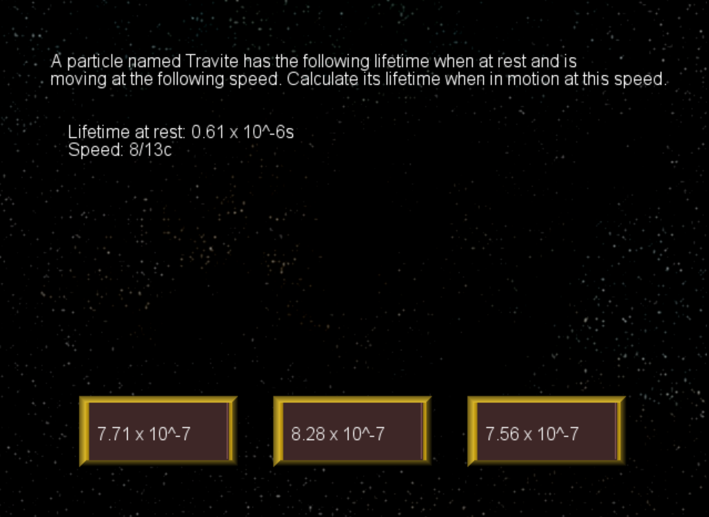
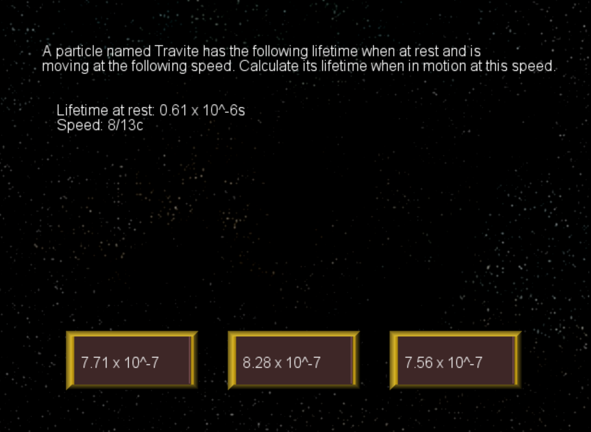
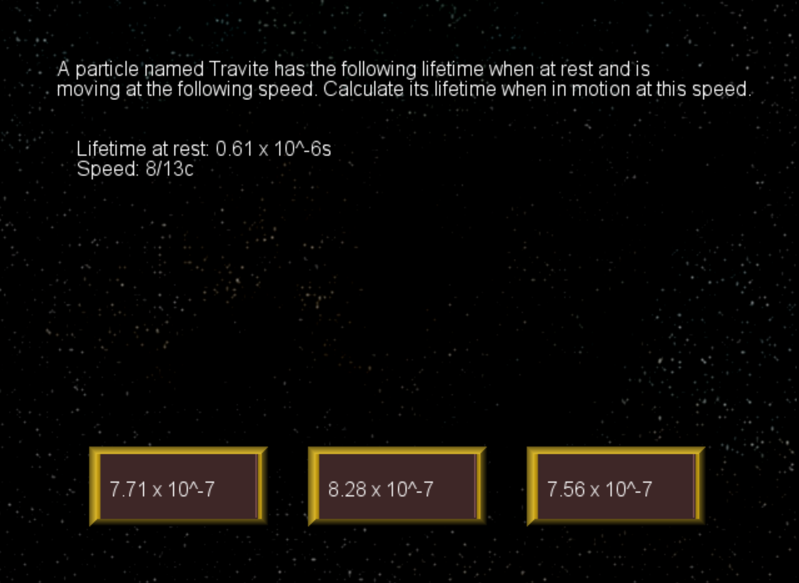
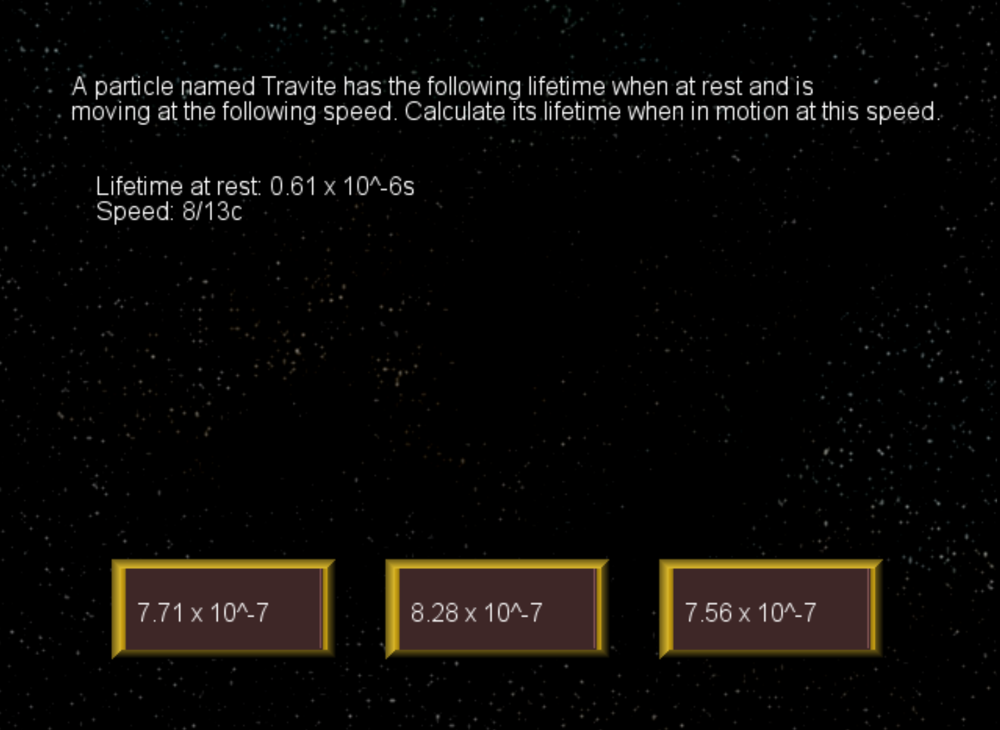

 

Time Dilator is, similar to Resist!, a game created as a learning device to teach students about the math behind time dilation. It was created in Game Maker using its proprietary programming language, GML. The most programmatically complex part of the game is the randomly generated time dilation questions. These questions ask the user to calculate the lifetime of a particle based on how fast it is moving relative to the speed of light. The particle's lifetime, and how fast it is going, are chosen randomly. The game then solves the problem and creates three buttons that display answers, two of which are slightly off versions of the correct one.
I acted as the sole programmer in our group of five, so all of the actual gameplay programming was on me. I also did some of the UI art.
My programming skill has grown immensely since this project, but I leave it here because I believe it displays important qualities, such as growth and an early passion. I taught myself GML, so this project occurred during a moment in my life when I was learning to program for the first time.
One issue the game does have is that the learning device is poorly integrated with the mechanics; you have to solve the time dilation questions between levels, but they have nothing to do with actually progressing through the game. They just give credits to buy upgrades, which are important, but it leads to the questions just feeling shoved in. A better choice for a quiz learning device probably would've been something like a turn-based game where each turn you answer a question to change the power of an attack, for example.